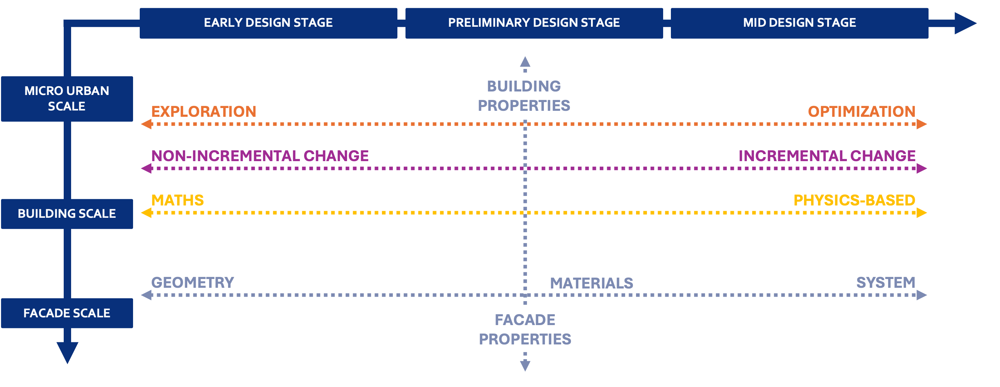

Digital workflows for informed decision making in building envelope design: A systematic literature review.
This paper has systematically reviewed 165 studies related to performance-based
optimization in BE design. By disaggregating each process into 155 distinct tasks, the review classifies these processes
by design stage, design scale, variable type, performance objective, optimization algorithm, or decision-making method.
The study identifies patterns in applying optimization and simulation tools and proposes a methodological framework to
guide future integrative workflows.
The process leads to the proposal of several design matrices that are shown in this
interactive app. This framework establishes a foundation for flexible, user-centered digital workflows that drive improvements
in building efficiency and occupant comfort.

Julia Gomez Goenaga, Aurora Monge Barrio, Karla Saldaña Ochoa, Antonio Villanueva Peñalver.
2025